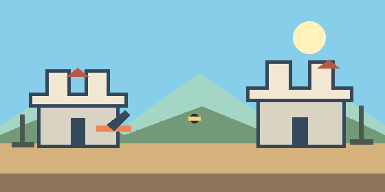
Pojedynek Zamków (Janek i Baranek)
Artyleria turowa dla 2 graczy (hotseat). Ustaw kąt i moc, uwzględnij wiatr i zniszcz zamek przeciwnika.
Graj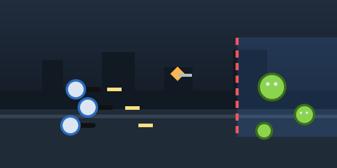
Napór Zombie (Vanilla)
Prototyp 1.0 - oryginalna gra. Broń bazy przed falami zombie. Przesuwaj ekipę w pionie, strzelaj prosto, dobieraj ludzi i moc.
Graj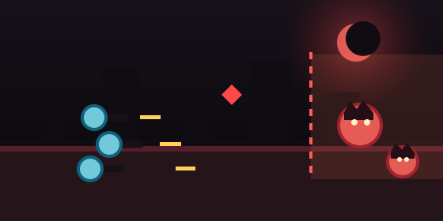
Zombie Max 0.1
Dotychczasowy wariant Maksa. Broń bazy przed falami zombie i rozwijaj swoją ekipę.
Graj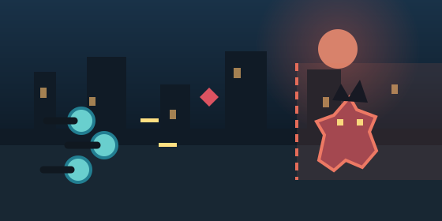
Zombie Max 0.2
Nowsza odsłona strzelanki Maksa: broń bazy przed falami zombie, rozwijaj ulepszenia i zmierz się z Super Hard Demon.
Graj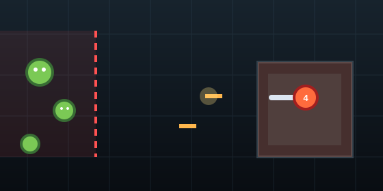
Zombie Aleksa
Wariant prowadzony przez Aleksa. Broń bazy przed falami zombie z innymi strategiami.
Graj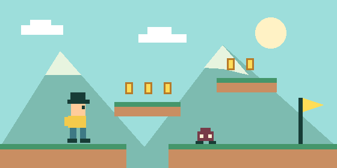
Mario 0.1
Klasyczny wariant platformowej przygody: skacz po platformach, zbieraj monety i dotrzyj do mety.
Graj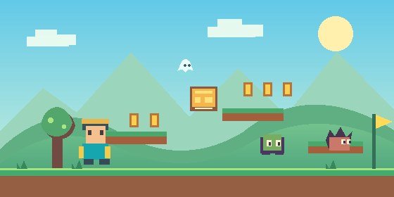
Mario 0.2
Pierwsze wydanie platformowej przygody. Zbieraj monety, odkrywaj sekrety i dotrzyj do bramy na szczycie!
Graj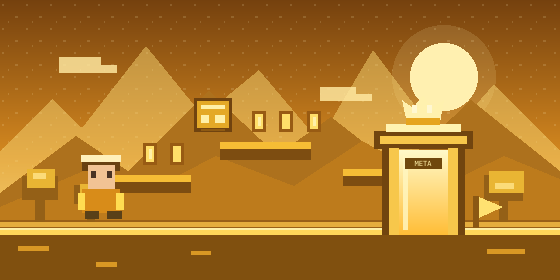
Mario 0.3
Najnowsza odsłona przygody Maksa. Odkrywaj 100 etapów z nowymi przeciwnikami i zmiennymi światami.
Graj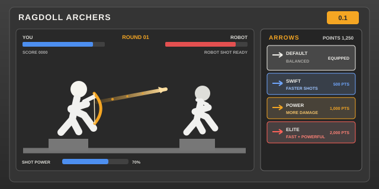
Ragdoll Archers 0.1
Pojedynek lukiem z robotem. Celuj, laduj sile strzalu i przechodz kolejne rundy.
Graj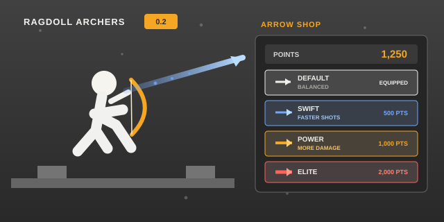
Ragdoll Archers 0.2
Pojedynek lukiem z robotem. Celuj, laduj sile strzalu i przechodz kolejne rundy.
Graj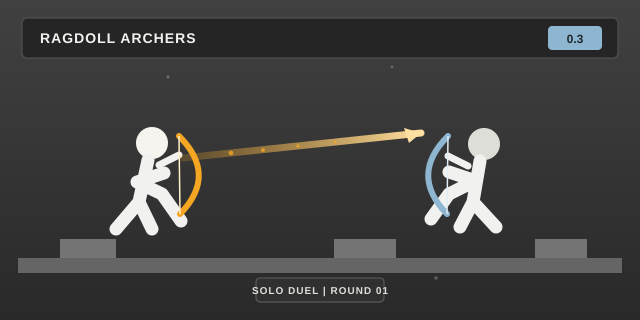
Ragdoll Shooters 0.3
Osobna wersja pojedynku lukiem z robotem, zachowana jako wydanie 0.3.
Graj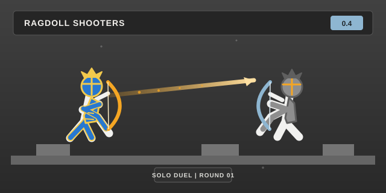
Ragdoll Shooters 0.4
Wersja startowa 0.4, oparta na pojedynku z wydania 0.3 i gotowa do dalszego rozwoju.
Graj